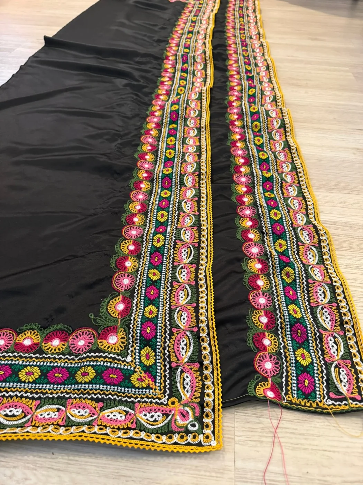
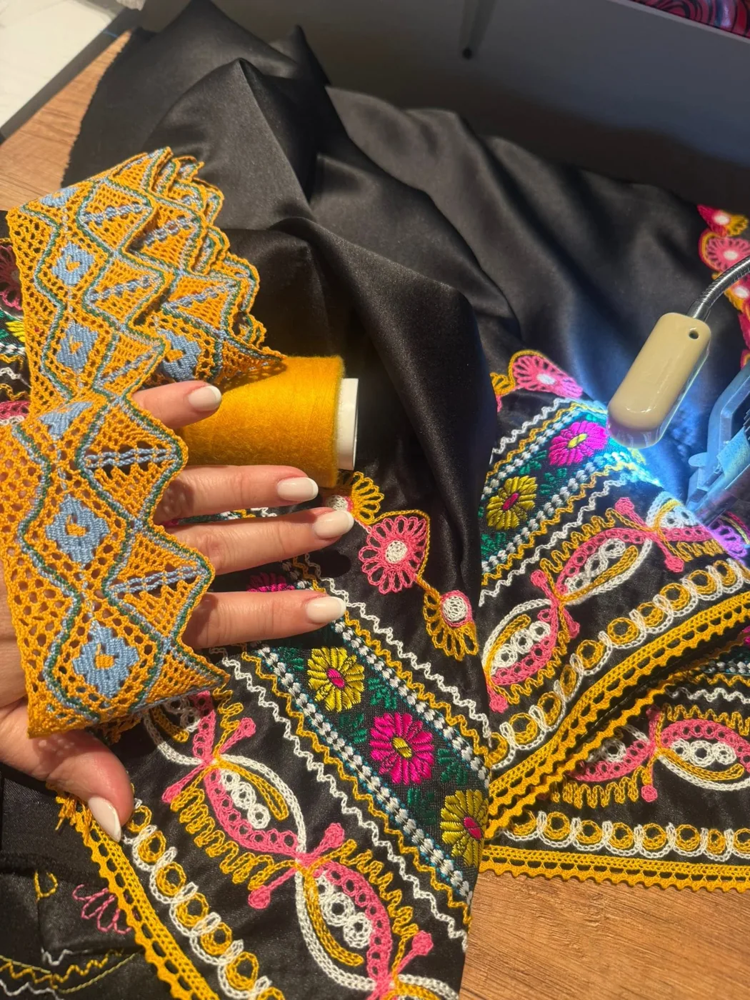
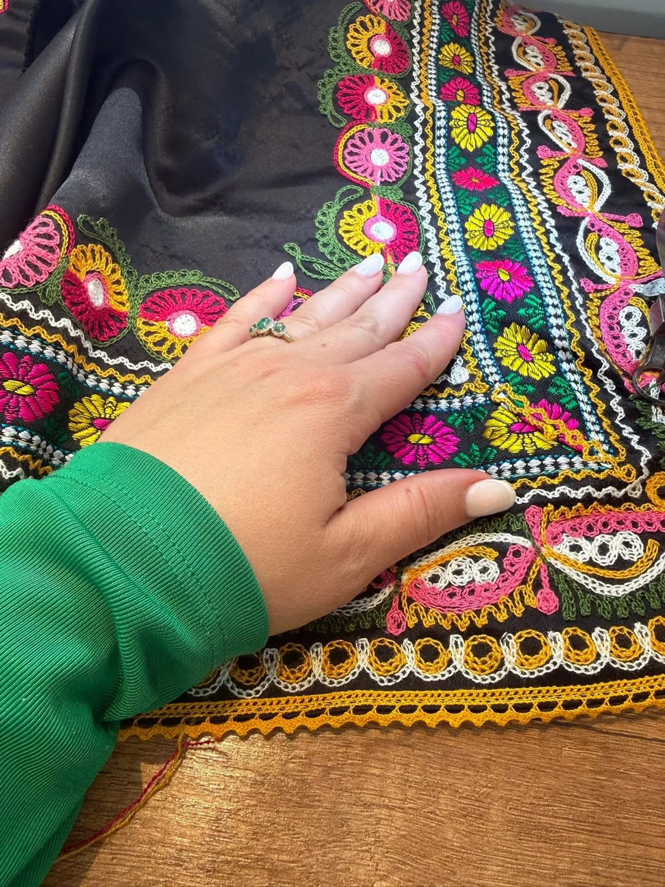
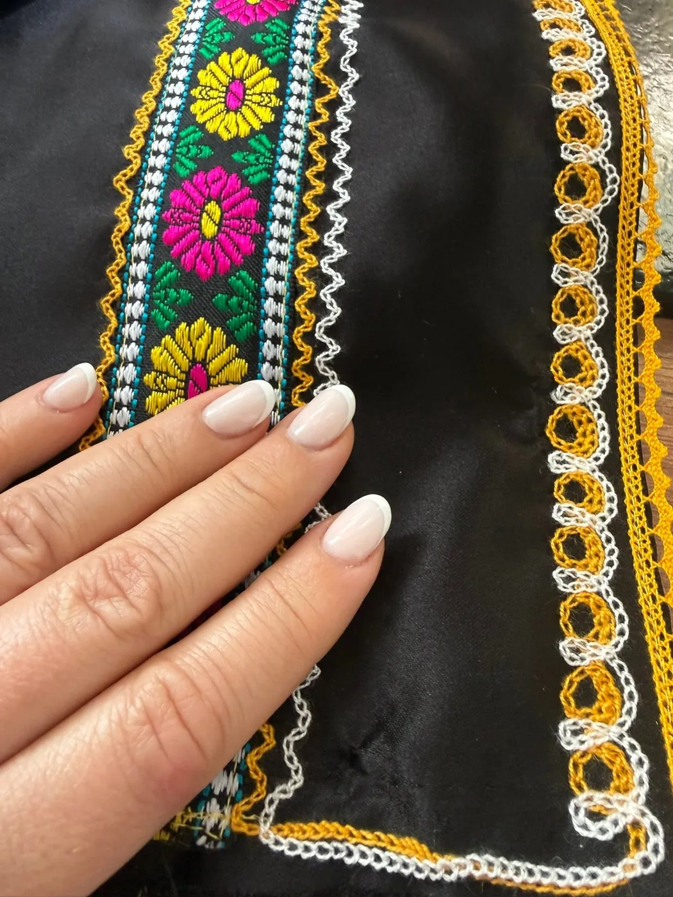

7 m
Sedem metrov vzorov a farieb.
„Ten náš kroj bol naozaj bohatý a extra pracný, čo je najlepšie vidno, keď ešte nie je zozberkaný do záster. Farby sa vám pravdepodobne javia ako nie celkom typické kroju ‚od Piešťan‘ — no ubezpečujem vás, nejedná sa o anomáliu.“